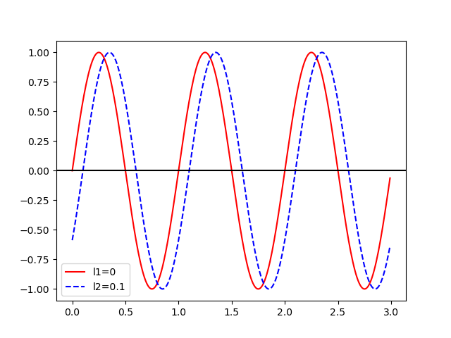

title: Gaits and Functions
Minutae
Agenda
- HW2P1 Released
- around 75% average
- almost everyone got Problem 1.3 wrong
- People who came to office hours performed better.
- HW2P2 grading in progress - will be released before midterm
- HW3 will probably not be released in time
- Attendance will be updated soon
- Remember to join groups
- Final part of Pendulum extensions
- controller
- get force
- sensors and sites
- Today's lecture
- Practical exercise: code up a simple robot in Mujoco
Attendance
Biomechanics II
What is a "Gait"
Different Animals
Elephant walking Muybridge buffalo galloping Gait of healthy hamster
Gaits
Two-legged
- Walk
- Run
Four-legged (horse)
- walk
- trot
- canter
- gallop
- pronk
Six-legged
- Alternating Tripod
- ...many others
Pronking
https://www.youtube.com/watch?v=jMIiB9DnRXg
Alternating Tripod
Representations
Footprints
Footfall Patterns
Stills
Biomechanics Studies
Biomechanics Studies
Biewener, a a. “Biomechanics of Mammalian Terrestrial Locomotion.” Science (New York, N.Y.) 250, no. 4984 (1990): 1097–1103. https://doi.org/10.1126/science.2251499.
Biomechanics Studies
Fujita, M., K. Kawakami, and H. Higuchi. “Hopping and Climbing Gait of Japanese Pygmy Woodpeckers (Picoides Kizuki).” Comparative Biochemistry and Physiology. Part A, Molecular & Integrative Physiology 148, no. 4 (2007): 802–10. https://doi.org/10.1016/j.cbpa.2006.06.048.
Muscle Activation Patterns
Reproduction
CPGs
Ijspeert, Auke Jan. “Central Pattern Generators for Locomotion Control in Animals and Robots: A Review.” Neural Networks 21, no. 4 (May 2008): 642–53. https://doi.org/10.1016/j.neunet.2008.03.014.
Periodic Functions
{kind=link}
Additional parameters
{kind=link}
- \(f\): frequency (Hz)
- \(b\): vertical offset
- \(t\): time
- \(l\): percentage of cycle
Amplitude
{kind=link}
Frequency
{kind=link}
Offset
{kind=link}
Time Offset
inverse dynamics 
{kind=link}
Time Offset
{kind=link}
Superposition
{kind=link}
Practical Examples
- beetle
- spherical four-bar -- chapter 35 in textbook -- simulation section
- contact
- inverse dynamics